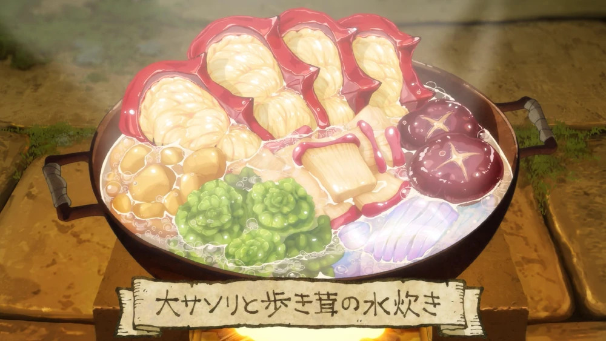

Huge Scorpion and Walking Mushroom Hotpot

DESCRIPTION
A warm, nourishing dish created by Senshi on his first time meeting Laios' adventuring group,
made from ingredients found on the first floor of the dungeon.
Scorpion, mushroom, algae, tubers and dried slime noodles are all boiled together in water, creating a light soup.
INGREDIENTS (3 - 4 servings)
- 1 huge scorpion
- 1 walking mushroom
- 2 mushroom feet
- 5 med. sized invertatoes
- dried slime
- water
INSTRUCTIONS
Prepping the Huge Scorpion
- Chop off the head, pincers, leg, and tail of the huge scorpion
- Slice the scorpion up so that it heats evenly and the juices seep out
- Pull out the innards from the cut pieces
Prepping the Walking Mushroom
- Skin the mushroom and throw away the butt
- Slice off the feet and save them
- Cut the body of the mushroom vertically into manageable sizes
Prepping the Dried Slime
- Fold a sheet of dried slime into thirds
- Slice the dried slime thinly to resemble noodles
Prepping the Invertatoes
- Peel the skins of the invertatoes
- Slice the invertatoes into large chunks
Final Steps
- Put all the prepped ingredients into a large pot
- Add water to the pot so that the ingredients are submerged
- Place a lid on the pot and serve when boiling